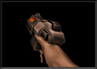
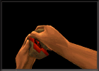

| TCM Intel Brief • Operation Alien Overlord • Military Objectives • The Stroggos
Environment Structural Systems • Environmental Hazards • Arsenal • Military Supplies |
||
Arsenal There are a variety of weapons available to you. Each has a particular advantage given the combat situation. Press a number key or use the inventory to select a weapon. |
||
| Blaster: This is the standard issue rechargeable energy side-arm. It does not require ammunition. Useful for taking down Guards as well as exploding barrels and setting off shootable buttons and secret doors. Keep one on you at all times. |  | |
| Shotgun: This uses shells for ammunition. The spread of the shotgun blast makes close combat more damaging, but long range attacks easier. Perfect for the less than proficient marksman. The shotgun is effective against Strogg Guards and Flyers. |  |
|
| Super Shotgun: This is the uncompromising big brother to the Shotgun. Choose your shots effectively. The slow firing rate may only give you a few chances to bring down the enemy before he’s able to engage you up close. It eats more shells than the Shotgun, but the show is well worth it. |  |
|
| Machine Gun: Although this weapon is easy to use, its light weight allows for considerable kickback that will push your gun up. Fire in short burst until you can effectively steady your aim. |  |
|
| Chain Gun: The chain gun makes mince meat out of your enemy, but requires an insane amount of ammunition. The long spin up and spin down time makes the chain gun most effective for sustained attacks. |  |
|
| Hand Grenade: Twist the grenade to activate the fuse timer. The longer you hold an active grenade, the farther you’ll throw it. Just remember to throw at some point. Throwing the hand grenade does not make a sound. Therefore the aliens can’t easily trace it back to you. |  | |
| Grenade Launcher: The grenade launcher is useful for delivering firepower into hard to reach areas or clearing out potential ambushes. We do not recommend using the grenade launcher in confined areas. |  |
|
| Rocket Launcher: The rocket launcher delivers heavy fire power to your target. Be careful not use this weapon in close combat. |  |
|
| Hyper Blaster: A hyper blaster is an energy chain gun with no spin up delay. Its high rate of fire is incredibly effective at destroying the enemy and depleting your energy cells. |  |
|
| Rail Gun: The Rail Gun fires depleted uranium slugs at super high velocities. Take note of the distinctive blue corkscrew trail of smoke caused by the projectile – or better yet, see how many scumbag Stroggs it goes through before it hits concrete. |  |
|
| BFG: Big, uh, freakin’ gun. This weapon redefines the word "wallpaper." Simply fire the BFG into a small room of unsuspecting Strogg and observe the new red paint job. |  |
|